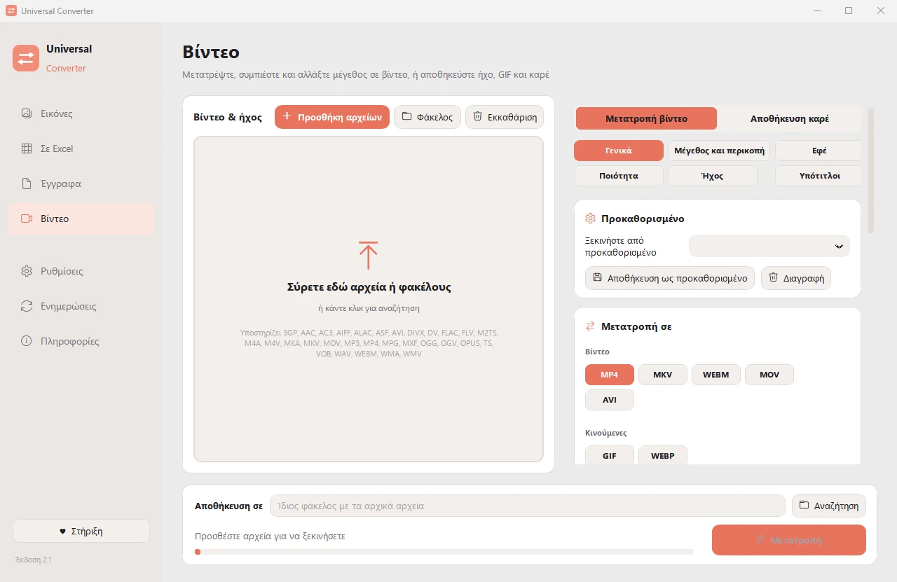

Αποθήκευση του ήχου ενός βίντεο σε MP3
Κρατήστε ένα τραγούδι, μια ομιλία ή ένα φωνητικό μήνυμα από ένα βίντεο χωρίς την εικόνα. Μπορείτε πρώτα να κόψετε μόνο το κομμάτι που θέλετε. Η εφαρμογή Android αποθηκεύει τον ήχο σε M4A.
Δωρεάν · Windows 10 και 11, 64-bit · Έλεγχος για ιούς
Λήψη για Mac (beta) Apple silicon, macOS 12 ή νεότερο
Λήψη για Android Android 10 ή νεότερο
Πώς γίνεται
- Ανοίξτε το Universal Converter και επιλέξτε Βίντεο στα αριστερά.
- Σύρετε τα αρχεία σας ή έναν ολόκληρο φάκελο στο παράθυρο, ή πατήστε Προσθήκη αρχείων.
- Επιλέξτε MP3 (ή M4A, FLAC, WAV, OGG, Opus) στο Μετατροπή σε.
- Πατήστε Μετατροπή. Τα νέα αρχεία αποθηκεύονται δίπλα στα αρχικά ή στον φάκελο που επιλέγετε.

Γιατί χωρίς internet;
Το Universal Converter κάνει τη δουλειά στη δική σας συσκευή. Τα αρχεία σας μένουν ιδιωτικά, τα μεγάλα αρχεία δεν είναι πρόβλημα και λειτουργεί χωρίς σύνδεση στο internet.
Τι άλλο μπορεί να κάνει
- Συμπίεση βίντεο χωρίς ανέβασμα
- Μετατροπή βίντεο μεταξύ MP4, MKV, WebM, MOV και AVI
- GIF από βίντεο
- Πίνακες από PDF σε Excel
- Ένωση φωτογραφιών σε ένα PDF
- Μετατροπή PDF σε Word
- Ένωση πολλών αρχείων σε ένα PDF
- Αντιγραφή του κειμένου από εικόνα (OCR)
- Μετατροπή εικόνων μεταξύ JPG, PNG, WEBP και άλλων
- Αλλαγή μεγέθους εικόνων ή μείωση σε μέγεθος αρχείου